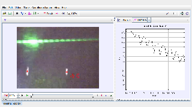

Tracker Experiment
A laser projected through a slit produces a diffraction pattern on a screen. The slit width, and thus the diffraction pattern, varies with temperature.
Worksheet: a student worksheet is available at https://physlets.org/tracker/library/innovative_tpt/html/thermal%20expansion_video_07_vdb.html
Author: Anne J. Cox
Contact: Eckerd College, St. Petersburg, FL